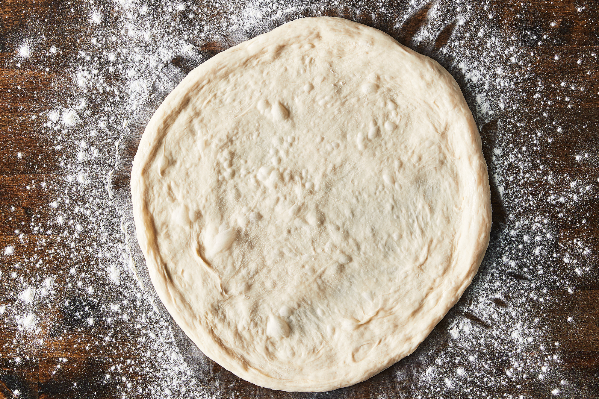

Pizza Dought
This is the easiest pizza dought you ever made, fella
Ingredients
- ¼ cup whole wheat flour
- 3 cups all-purpose flour
- ¼ teaspoon active dry yeast
- 1 ¼ teaspoons salt
- ¼ teaspoon white sugar
- 2 tablespoons olive oil
- 1 ½ cups warm water (100 degrees F or 38 degrees C)
- all-purpose flour, for dusting
Steps
- Stir whole wheat flour, all-purpose flour, yeast, salt, sugar, olive oil, and warm water with a spatula until formed into a sticky ball of dough that pulls away from sides of a large bowl, about 3-4 minutes.n
- Cover the bowl with a light cloth or plastic wrap and let rise in a warm place (80 to 95 degrees F (27 to 35 degrees C)) for 18 hours, until doubled in size.n
- Preheat the oven to 550 degrees F (280 degrees C). Sprinkle a baking sheet with cornmeal.n
- Turn the dough onto a lightly floured surface and sprinkle with more flour. Form the dough into a rectangle, and cut it into four equal parts. Shape each piece into a ball, stretching and tucking the dough to create a smooth surface, adding more flour if needed. Cover the dough balls with a towel and let rest for 15 minutes.n
- To shape the dough, sprinkle the surface with flour and lightly pat flat. Use a rolling pin to form a thin disk about 9 inches in diameter.n
- Transfer the formed crust to the prepared baking sheet and top as desired. Bake on the bottom rack for 4 minutes, move to the middle rack and bake for 5-6 minutes more minutes, until the bottom is crispy and the top is lightly browned. Move to cooling rack to cool slightly before serving.n